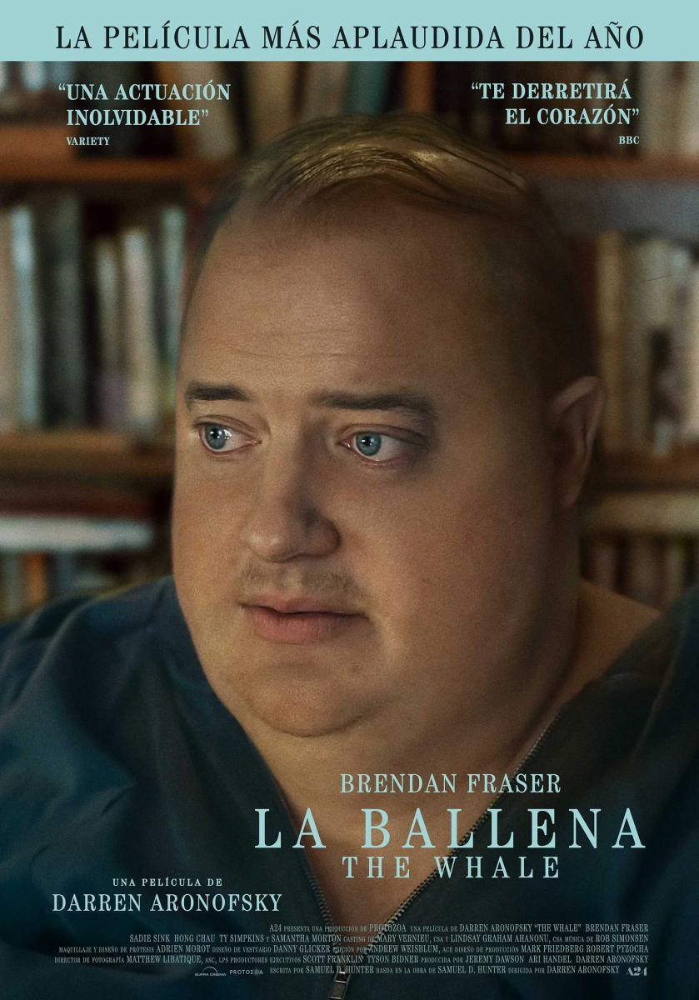

El Gato con Botas
El Gato con Botas se embarca en un viaje epico al Bosque
Negro para encontrar la mitica Estrella de los Deseos y
recuperar sus vidas peridias. Cuando solo le queda una vida,
el Gato tendrá que aprender a ser humilde y pedir ayuda a Kitty Soft Paws.

Avatar 2
Una decada despues de los sucesos de la primera pelicula,
narra la historia de la familia Sully, el peligro que los persigue,
los esfuerzo que hacen para mantenerse a salvo, las batallas que
libran para seguir con vida, y sus tragedias.

Alerta Extrema
ALERTA EXTREMA, es una explosiva pelicula de accion donde
el piloto Brodie Torrance salva a pasajeros al realizar
un aterrizaje arriesgado en una isla devastada por la guerra,
solo para descubrir que el sobrevivir al aterrizaje fue solo el comienzo.

M3GAN
Gemma, una brillante especialista en robotica,
usa inteligencia artificial para desarrollar M3GAN,
una muñeca realista programada para ser la mejor compañera
de los niños y la mejor aliada de los padres.
Las aventuras de Maurice
Maurice, un gato callejero, que tiene la estafa perfecta para ganar dinero.
Encuentra a un niño de aspecto tonto que toca la gaita y tiene su propia
horda de ratas, que extreñamente saben leer y escribir.

The Whale
Un profesor de ingles solitario que vive con obesidad grave
intenta volver a conectarse con su hija adolescente distanciada
para tener una ultima oportunidad de redención.